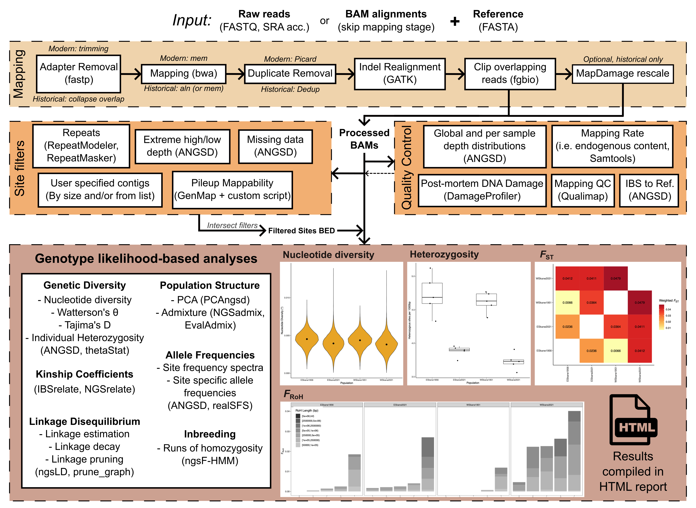

Welcome to the documentation for PopGLen
PopGLen is aimed at enabling users to run population genomic analyses on their data within a genotype likelihood framework in an automated and reproducible fashion. Genotype likelihood based analyses avoid genotype calling, instead performing analyses on the likelihoods of each possible genotype, incorporating uncertainty about the true genotype into the analysis. This makes them especially suited for datasets with low coverage or that vary in coverage.
This pipeline was developed in initially to make my own analyses easier. I work with many species being mapped to their own references within the same project. I developed this pipeline so that I could ensure standardized processing for datasets within the same project and to automate the many steps that go into performing these analyses. As it needed to fit many datasets, it is generalizable and customizable through a single configuration file, uses a common workflow utilized by ANGSD users, and provides reporting features to quickly assess sample quality, filtering, and results. As such, it is applicable to a wide variety of studies that utilize population genomics on whole genome data.
This webpage contains documentation so others can utilize the features of this pipeline, including a short getting started page, a detailed configuration summary, a tutorial to walk users through running all analyses in the pipeline, as well as more specialized documentation describing how to configure the pipeline to run on a HPC cluster, how to modify the requested resources for jobs, and the file paths for all major output files for reference.
Questions? Feature requests? Just ask!
I'm glad to answer questions on the GitHub Issues page for the project, as well as take suggestions for features or improvements!
Pipeline Summary

The pipeline aims to follow the general path many users will use when working with ANGSD and other GL based tools. Raw sequencing data is processed into BAM files (with optional configuration for historical degraded samples) or BAM files are provided directly. From there, several quality control reports are generated to help determine what samples are included. The pipeline then builds a 'sites' file to perform analyses with. This sites file is made from several user-configured filters (including identification and removal of repetitive content, sites with extreme global sequencing depth, and/or low mappability), intersecting all and outputing a list of sites for the analyses to be performed on across all samples. This can also be extended by user-provided filter lists (e.g. to limit to neutral sites, genic regions, etc.).
After samples have been processed, quality control reports produced, and the sites file has been produced, the pipeline can continue to the analyses.
- Linkage disequilibrium estimation, LD decay, LD pruning (ngsLD)
- PCA (PCAngsd)
- Admixture (NGSAdmix)
- Inbreeding/Runs of Homozygosity (ngsF-HMM)
- Relatedness (NgsRelate, IBSrelate)
- Identity by state matrix (ANGSD)
- Site frequency spectrum (ANGSD)
- Watterson's estimator (θw), Nucleotide diversity (π), Tajima's D (ANGSD)
- Individual heterozygosity with bootstrapped confidence intervals (ANGSD)
- Pairwise FST (ANGSD)
- Population allele frequencies (ANGSD)
These all can be enabled and processed independently, and the pipeline will generate genotype likelihood input files using ANGSD and share them across analyses as appropriate, deleting temporary intermediate files when they are no longer needed.
At any point after a successful completion of a portion of the pipeline, a report can be made that contains tables and figures summarizing the results for the currently enabled parts of the pipeline.
If you're interested in using this, head to the Getting Started page!
Manuscripts utilizing PopGLen
Early versions of PopGLen have been used in the following manuscripts, which may help to give an idea of the scope of analyses that it can be utilized for:
Nolen ZJ, Rundlöf M, Runemark A. 2024 Species-specific erosion of genetic diversity in grassland butterflies depends on landscape land cover. Biological Conservation 296, 110694. (doi:10.1016/j.biocon.2024.110694)
Nolen ZJ, Jamelska P, Torres Lara AS, Wahlberg N, Runemark A. 2024 [preprint] Species-specific loss of genetic diversity and accumulation of genetic load following agricultural intensification. bioRxiv, 2024.10.07.616612. (doi:10.1101/2024.10.07.616612)
Software utilized by PopGLen
PopGLen is a workflow that incorporates several underlying tools. Here, you will find a list of references for the main underlying tools and when they are utilized. Please cite the underlying tool if you utilize it through PopGLen.
fastp: Chen, S., Zhou, Y., Chen, Y., & Gu, J. (2018). fastp: An ultra-fast all-in-one FASTQ preprocessor. Bioinformatics, 34(17), i884–i890. https://doi.org/10.1093/bioinformatics/bty560 (Adapter trimming, read collapsing, fastq QC)
BWA: Li, H., & Durbin, R. (2009). Fast and accurate short read alignment with Burrows–Wheeler transform. Bioinformatics, 25(14), 1754–1760. https://doi.org/10.1093/bioinformatics/btp324 (Read mapping)
SAMtools: Danecek, P., Bonfield, J. K., Liddle, J., Marshall, J., Ohan, V., Pollard, M. O., Whitwham, A., Keane, T., McCarthy, S. A., Davies, R. M., & Li, H. (2021). Twelve years of SAMtools and BCFtools. GigaScience, 10(2). https://doi.org/10.1093/gigascience/giab008 (Endogenous content calculation, depth subsampling, bam file manipulation)
Picard: Picard toolkit. (2019). Broad Institute, GitHub Repository. https://broadinstitute.github.io/picard/ (Duplicate removal for paired end reads)
Dedup: Peltzer, A., Jäger, G., Herbig, A., Seitz, A., Kniep, C., Krause, J., & Nieselt, K. (2016). EAGER: Efficient ancient genome reconstruction. Genome Biology, 17(1), Article 1. https://doi.org/10.1186/s13059-016-0918-z (Duplicate removal for collapsed reads)
GATK: Auwera, G. A. V. der, & O’Connor, B. D. (2020). Genomics in the Cloud: Using Docker, GATK, and WDL in Terra. O’Reilly Media, Inc. (Realignment around indels)
mapDamage2.0: Jónsson, H., Ginolhac, A., Schubert, M., Johnson, P. L. F., & Orlando, L. (2013). mapDamage2.0: Fast approximate Bayesian estimates of ancient DNA damage parameters. Bioinformatics, 29(13), 1682–1684. https://doi.org/10.1093/bioinformatics/btt193 (Estimation of post-mortem DNA damage, base recalibration for damage correction)
DamageProfiler: Neukamm, J., Peltzer, A., & Nieselt, K. (2021). DamageProfiler: Fast damage pattern calculation for ancient DNA. Bioinformatics, 37(20), 3652–3653. https://doi.org/10.1093/bioinformatics/btab190 (Estimation of post-mortem DNA damage)
bamUtil: Jun, G., Wing, M. K., Abecasis, G. R., & Kang, H. M. (2015). An efficient and scalable analysis framework for variant extraction and refinement from population scale DNA sequence data. Genome Research, gr.176552.114. https://doi.org/10.1101/gr.176552.114 (Clipping of overlapping reads so they are not double counted by ANGSD)
Qualimap: García-Alcalde, F., Okonechnikov, K., Carbonell, J., Cruz, L. M., Götz, S., Tarazona, S., Dopazo, J., Meyer, T. F., & Conesa, A. (2012). Qualimap: Evaluating next-generation sequencing alignment data. Bioinformatics, 28(20), 2678–2679. https://doi.org/10.1093/bioinformatics/bts503 (General BAM file QC)
ngsLD: Fox, E. A., Wright, A. E., Fumagalli, M., & Vieira, F. G. (2019). ngsLD: Evaluating linkage disequilibrium using genotype likelihoods. Bioinformatics, 35(19), 3855–3856. https://doi.org/10.1093/bioinformatics/btz200 (Estimation of linkage disequilibrium for pruning, LD decay, LD sampling)
PCAngsd: Meisner, J., & Albrechtsen, A. (2018). Inferring Population Structure and Admixture Proportions in Low-Depth NGS Data. Genetics, 210(2), 719–731. https://doi.org/10.1534/genetics.118.301336 (Principal component analysis)
NGSadmix: Skotte, L., Korneliussen, T. S., & Albrechtsen, A. (2013). Estimating Individual Admixture Proportions from Next Generation Sequencing Data. Genetics, 195(3), 693–702. https://doi.org/10.1534/genetics.113.154138 (Admixture analysis)
ngsRelateV2: Hanghøj, K., Moltke, I., Andersen, P. A., Manica, A., & Korneliussen, T. S. (2019). Fast and accurate relatedness estimation from high-throughput sequencing data in the presence of inbreeding. GigaScience, 8(5), giz034. https://doi.org/10.1093/gigascience/giz034 (Relatedness estimation)
IBSrelate: Waples, R. K., Albrechtsen, A., & Moltke, I. (2019). Allele frequency-free inference of close familial relationships from genotypes or low-depth sequencing data. Molecular Ecology, 28(1), 35–48. https://doi.org/10.1111/mec.14954 (Relatedness estimation)
ANGSD: Korneliussen, T. S., Albrechtsen, A., & Nielsen, R. (2014). ANGSD: Analysis of Next Generation Sequencing Data. BMC Bioinformatics, 15(1), Article 1. https://doi.org/10.1186/s12859-014-0356-4 (Depth calculation, genotype likelihood estimation, SNP calling, allele frequencies, SFS, diverity and neutrality statistics, heterozygosity, $F_{ST}$)
ngsF-HMM: Vieira, F. G., Albrechtsen, A., & Nielsen, R. (2016). Estimating IBD tracts from low coverage NGS data. Bioinformatics, 32(14), 2096–2102. https://doi.org/10.1093/bioinformatics/btw212 (Inbreeding and runs of homozygosity estimation)
RepeatModeler2: Flynn, J. M., Hubley, R., Goubert, C., Rosen, J., Clark, A. G., Feschotte, C., & Smit, A. F. (2020). RepeatModeler2 for automated genomic discovery of transposable element families. Proceedings of the National Academy of Sciences, 117(17), 9451–9457. https://doi.org/10.1073/pnas.1921046117 (Building repeat library from reference genome)
RepeatMasker: Smit, A., Hubley, R., & Green, P. (2013). RepeatMasker Open-4.0 (4.1.2) [Computer software]. http://www.repeatmasker.org (Identifying repeat regions from repeat library)
GenMap: Pockrandt, C., Alzamel, M., Iliopoulos, C. S., & Reinert, K. (2020). GenMap: Ultra-fast computation of genome mappability. Bioinformatics, 36(12), 3687–3692. https://doi.org/10.1093/bioinformatics/btaa222 (Estimation of per-base mappability scores)
BEDTools: Quinlan, A. R. & Hall, I. M. (2010). BEDTools: a flexible suite of utilities for comparing genomic features. Bioinformatics, 26(6), 841-842. https://doi.org/10.1093/bioinformatics/btq033 (Transforming and intersecting filter files)